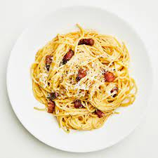

Description
Ingredients
- 12 oz (340 g) spaghetti
- 3-4 oz (85-115 g) guanciale or pancetta, diced
- 2 large eggs
- 1 cup (about 100 g) Pecorino Romano cheese, grated
- Freshly ground black pepper
- Salt (for pasta water)
- Extra virgin olive oil (optional)
- Chopped parsley (for garnish, optional)
Recipe
-
Bring a large pot of salted water to a boil. Add the spaghetti and cook until al dente according to the package instructions.
Reserve about 1 cup of pasta cooking water before draining.
-
While the pasta cooks, heat a skillet over medium heat. Add the diced guanciale or pancetta and cook until
it's crispy and golden brown. Remove from heat and set aside.
-
In a bowl, whisk together the eggs, grated Pecorino Romano cheese, and a generous amount of freshly ground black pepper.
The cheese will add saltiness, so you might not need to add extra salt.
-
Once the pasta is cooked, drain it and immediately add it to the skillet with the cooked guanciale or pancetta.
Toss to combine, allowing the pasta to absorb some of the flavorful fat.
-
Remove the skillet from heat and quickly pour the egg-cheese mixture over the pasta. Toss vigorously to coat the pasta evenly and create a creamy sauce.
The heat from the pasta will cook the eggs, but be careful not to scramble them.
-
If the sauce seems too thick, add a little of the reserved pasta cooking water gradually, until you achieve your desired consistency.
The starchy pasta water helps create a silky sauce.
-
Taste and adjust the seasoning with more black pepper if desired.
Remember, the Pecorino Romano cheese is salty, so be cautious with additional salt.
-
Optionally, you can drizzle a bit of extra virgin olive oil over the pasta to enhance the flavors and add some richness.
-
Serve the carbonara immediately, garnished with chopped parsley if desired.
Enjoy your homemade spaghetti carbonara!
Note: Traditional carbonara recipes do not include cream or onions. The
creaminess of the sauce comes from the emulsification of the eggs, cheese, and pasta water.
Return to top of page
Return to main page